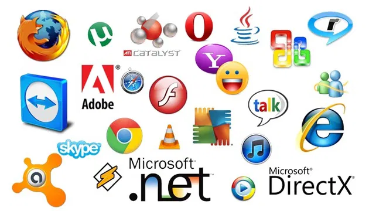
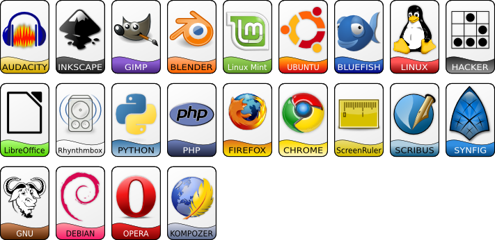
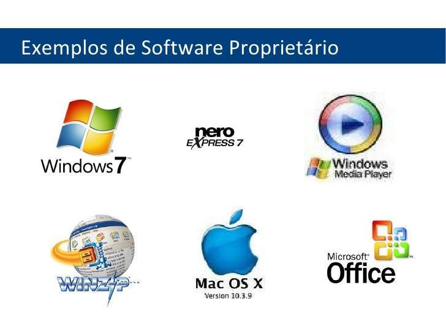
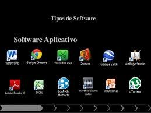
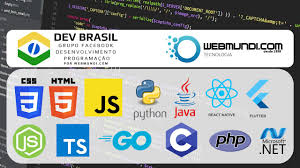

O que é um Software?
Software[1] (pronúncia em inglês: ['sɔftwɛəɹ]) é uma coleção de programas que dizem a um computador como executar tarefas específicas.[2] Isso contrasta com o hardware, a partir do qual o sistema é construído e que realmente executa o trabalho.
Software é o termo usado para se referir a uma sequência de instruções executadas em um dispositivo informático, como um computador ou máquina semelhante. Ele é um produto da engenharia de software e inclui não apenas o programa em si, mas também quaisquer documentações e especificações.
O que é uma Licença de Software?

Uma licença de software, ou licença de programa de computador, é uma definição de ações autorizadas (ou proibidas), no âmbito do direito de um programador de software de computador concedidas (ou impostas) ao usuário deste software. Entende-se por usuário qualquer entidade legal, empresas ou um "usuário final (doméstico)", de onde tem origem o termo em inglês end user license agreement (EULA).[1][2]
Quando uma licença acrescenta restrições para além das existentes no direito de autor, o usuário tem normalmente de aceitar que lhe sejam impostas estas restrições para poder utilizar legalmente o software, sendo esta uma das diferenças entre uma licença de software livre e uma licença de software não-livre: as licenças de software livre acrescentam direitos face aos já concedidos pelo direito de autor, deixando apenas para o ato de redistribuição as únicas regras que impõem. [3]
O que é um Software Licenciado?

(eu não configurei nada errado, a imagem é assim mesmo)
Um software licenciado é um programa cujo uso é regulamentado por um contrato de licença que confere ao usuário o direito de utilizar a ferramenta conforme os termos estabelecidos.
Esse licenciamento pode ser adquirido de várias formas, como através de uma licença perpétua, assinatura ou mesmo como Software como Serviço (SaaS).
O que é um Software Livre?
Software livre é o software que concede liberdade ao usuário para executar, acessar e modificar o código fonte, e redistribuir cópias com ou sem modificações. Sua definição é estabelecida pela Free Software Foundation em conjunto com o projeto GNU.[1][2][3] Segundo a definição, criada por Richard Stallman, fundador da FSF, software livre é qualquer programa de computador que pode ser usado, copiado, estudado, modificado e redistribuído sem nenhuma restrição.[4] É permitido vender software livre, entretanto as mesmas liberdades são válidas para o comprador.[5]
Embora sejam frequentemente usados como sinônimos, há distinções entre os termos software livre e software de código aberto. A definição de software livre envolve aspectos filosóficos e políticos, já a definição de software de código aberto, estabelecida pela Open Source Initiative, tem uma visão mais pragmática.[6] Assim, todo software livre é de código aberto, mas nem todo software de código aberto é um software livre.[7]
O que é um Software Propietário?
O software proprietário, privativo ou não livre, é um software para computadores que é licenciado com direitos exclusivos para o produtor.[1] Conforme o local de distribuição do software, este pode ser abrangido por patentes, direitos de autor, assim como limitações para a sua exportação e uso em países terceiros. Seu uso, redistribuição ou modificação é proibido ou limitado, exigindo que você solicite permissão para tal ou restringindo de tal forma que não é possível fazê-lo livremente.[2] A expressão foi criada em oposição ao conceito de software livre.
O que é um Software de Sistema?

Software de sistema ou programa de sistema é o software projetado para fornecer uma plataforma para outro software.[1] Exemplos de software de sistema incluem sistemas operacionais como macOS, Ubuntu (uma distribuição Linux) e Microsoft Windows, software de computação científica, mecanismos de jogos, automação industrial e aplicativos de software como serviço.[2] Em contraste com o software de sistema, softwares que permitem aos usuários realizar tarefas orientadas ao usuário, como criar documentos de texto, jogar jogos de computador, ouvir música ou navegar na Web, são coletivamente chamados de software aplicativo.[3]
Nos primórdios da computação, a maioria dos softwares aplicativos era personalizada por usuários de computador para atender a seus requisitos e hardware específicos. Em contraste, o software do sistema era geralmente fornecido pelo fabricante do hardware do computador e deveria ser usado pela maioria, ou todos os usuários desse sistema.
O que é um Software de Aplicativo?
Na informática, o software aplicativo, aplicativo, ou aplicação (abreviado app),[1][2][3] é um programa computacional projetado com uma linguagem de programação para facilitar o dia-a-dia do usuário de forma intuitiva[4] realizando uma tarefa específica;[2] executar um grupo de funções, tarefas, ou atividades coordenadas para o benefício do usuário (como processador de texto, planilha eletrônica, aplicativo de contabilidade, navegador web, cliente de e-mail, reprodutor de mídia, gerenciador de arquivos, simulador de voo aeronáutico, consola de jogos, ou editor de fotos). O substantivo coletivo software aplicativo refere-se a todas as aplicações coletivamente.[5] Isso contrasta com o software de sistema, que está principalmente envolvido na execução do computador.
As aplicações podem ser "empacotadas" com o computador e seu software de sistema ou publicadas separadamente, e podem ser codificadas como projetos proprietários, de código aberto, ou universitários.[6] Os aplicativos criados para plataformas móveis são chamados de aplicativos móveis.
O que é um Software de Programação?
Ferramenta de programação ou software é um programa ou aplicativo que um programador utiliza para criar, depurar, manter, ou realizar algum outro tipo de apoio para a criação de outros programas e aplicativos. O termo geralmente se refere a programas relativamente simples que podem ser combinados para realizar uma tarefa, tanto quanto se poderia utilizar múltiplas ferramentas para criar ou consertar objetos físicos.